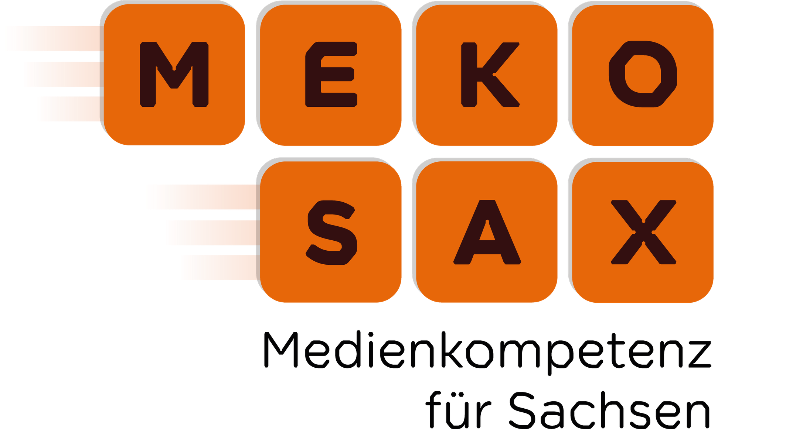
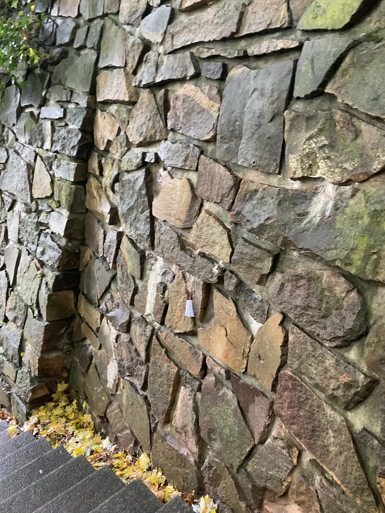
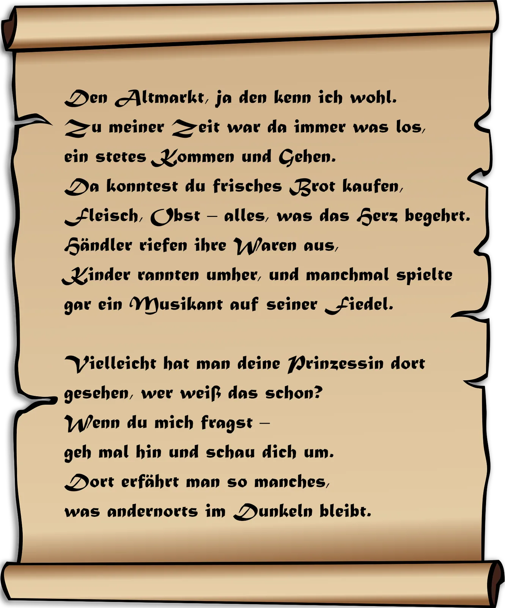
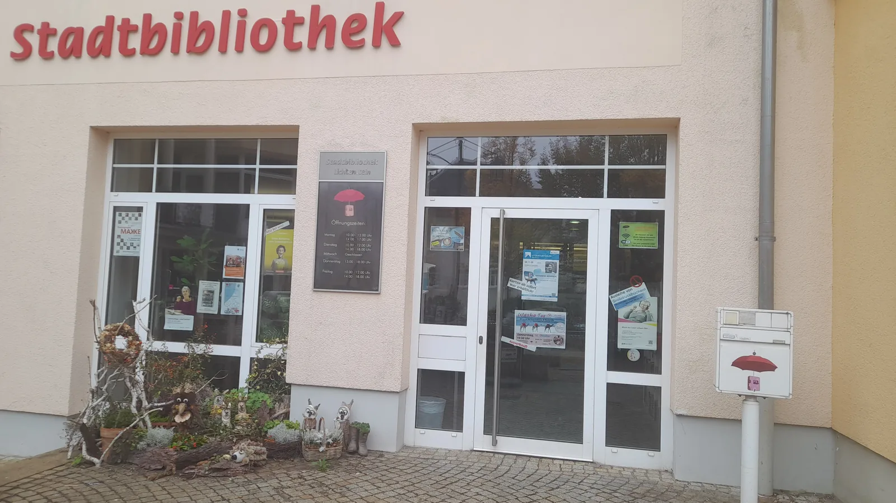
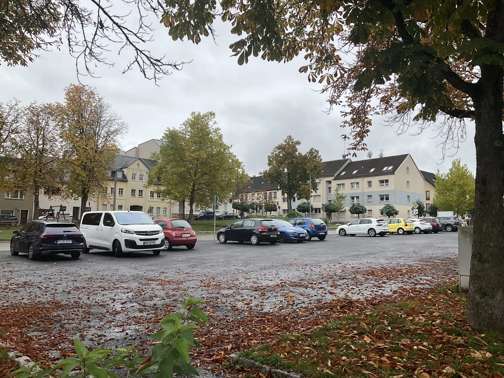
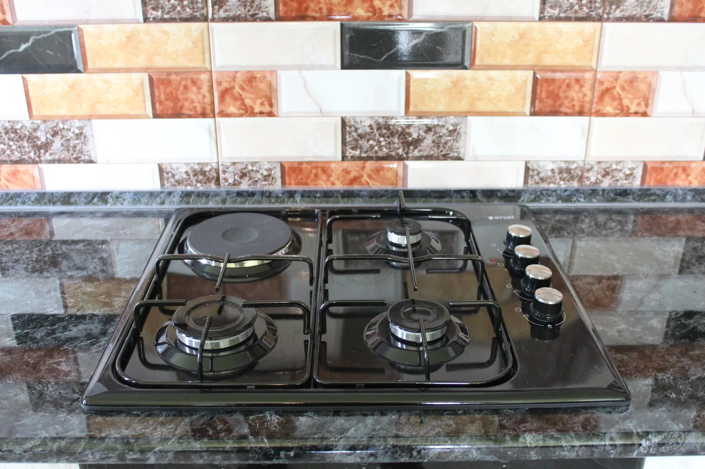
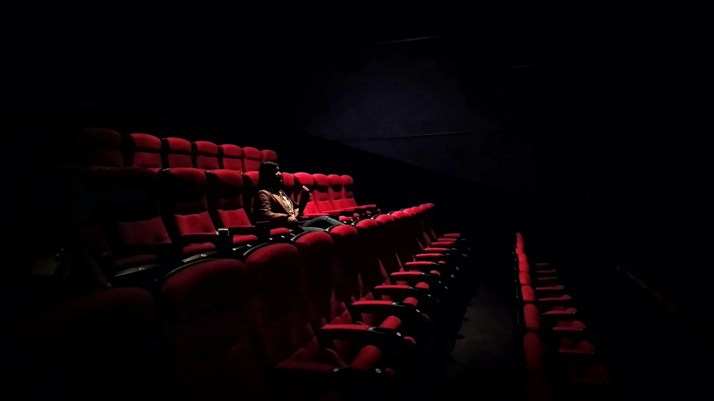

Ein Stadtspiel durch Lichtenstein · Start am Kulturpalais
Die verschwundene Prinzessin
Hört her, ihr tapferen Sucher und wackeren Entdecker! Seit vielen Nächten ist es still im Schloss – zu still. Die Prinzessin von Lichtenstein ist spurlos verschwunden! Niemand weiß, wohin sie ging, oder wer sie sah. Manche munkeln, sie sei einem alten Geheimnis auf der Spur gewesen. Andere behaupten, sie habe eine Nachricht hinterlassen – versteckt an Orten, die ihr besonders lieb waren.
Dein Auftrag
Folgt ihren Spuren durch die Stadt, löst die Rätsel, entdeckt die versteckten Hinweise und findet heraus, was mit ihr geschehen ist. Nur wer mit wachem Geist und offenen Augen unterwegs ist, kann die Wahrheit ans Licht bringen …
Wo ist sie?
Allein oder gemeinsam
Spielt auf mehreren Geräten
Eine Person erstellt einen Raum. Alle anderen treten mit dem sechsstelligen Code bei – am PC oder Smartphone.

Station 1
Schloss Lichtenstein
Du kommst am Schloss Lichtenstein an. Neugierig schaust du dich um und siehst, dass hier ein Wellnesshotel entsteht.
Mehr über das Schloss
Vermutlich wurde die Burg um 1200 durch Hermann II., Herr von Schönburg auf Glauchau, erbaut. Danach war sie bis 1945 im Besitz der Familie Schönburg. Später diente sie als katholisches Altenheim.
Im April 2000 erwarb Alexander Prinz von Schönburg-Hartenstein das Schloss und plante, es als Familiensitz und für öffentliche Veranstaltungen zu nutzen. Am 29.10.2014 wurde es zwangsversteigert. Derzeitiger Eigentümer ist der Bauunternehmer Mario Schreckenbach aus St. Egidien.
Es gibt eine Gruft und unterirdische Gänge, die man nach wie vor besichtigen kann. Ein Höhepunkt im Jahresverlauf ist die Schlössernacht. Sie bietet Besuchern die Möglichkeit, bei Musik, Führungen durch die unterirdischen Gänge, die Folterkammer und die Fürstengruft sowie regionalen Köstlichkeiten die besondere Atmosphäre des historischen Ortes zu genießen. Von der Angergasse zum Schloss führen 178 Schlossstufen und überwinden eine Höhe von 34 Metern.
Versteckter Hinweis
Findest du den kleinen Zettel?
Tippe im Bild auf den weißen Zettel in der Steinwand.

Station 2
Altmarkt

„Den Altmarkt, ja den kenn ich wohl. Zu meiner Zeit war da immer was los, ein stetes Kommen und Gehen. Da konntest du frisches Brot kaufen, Fleisch, Obst – alles, was das Herz begehrt. Händler riefen ihre Waren aus, Kinder rannten umher, und manchmal spielte gar ein Musikant auf seiner Fiedel.
Vielleicht hat man deine Prinzessin dort gesehen, wer weiß das schon? Wenn du mich fragst – geh mal hin und schau dich um. Dort erfährt man so manches, was andernorts im Dunkeln bleibt."
Der Pranger
Wissenstest
Du stehst auf dem Altmarkt und sprichst einen Passanten an. Du fragst ihn, ob er die Prinzessin gesehen hat. Der Passant erzählt dir, dass er gerade auf Kurzurlaub in Lichtenstein ist und will etwas von dir zum Pranger wissen. Kannst du ihm diese Fragen beantworten?
Station 3
Stadtbibliothek

Du bist vor der Stadtbibliothek angekommen.
„Gehe rein."
Was gibt es hier?
Als Erstes wirst du sehr nett begrüßt. Hier findest du nicht nur eine große Auswahl an Büchern, sondern auch Zeitschriften, Musik-CDs, Hörbücher, DVDs, Blurays, Tonies, Tiptoi-Stifte, E-Book-Reader, E-Books etc. und vieles mehr.
Ein Besuch lohnt sich das ganze Jahr. Im Sommer gibt es bei schönem Wetter einen Lesegarten mit Café oder auch den Büchersommer. Außerdem kann man zu Vorträgen, Vorlesungen und anderen Veranstaltungen gehen.
Welches Buch fällt dir ins Auge?
Tippe auf die goldene Krone im Bücherregal.
Station 4
Stadtpark

Spuren verbinden
Spiele den LearningSnack
Öffne das Minispiel in einem neuen Fenster. Das Lösungswort brauchst du hier zum Weiterkommen.
LearningSnack öffnenStation 5
Neumarkt

Du kommst am Neumarkt an, aber die Prinzessin ist nirgends zu sehen. Dir fallen zwei Nachtwächter auf – einer der beiden scheint aus einer anderen Zeit zu stammen. Du bist neugierig und lauschst ihrem Gespräch.
Deine Entscheidung
Welchem Sinn vertraust du?
Das war spannend, aber noch immer weißt du nicht, wo die Prinzessin ist. Du nutzt all deine Sinne und nimmst den Neumarkt genau wahr.
Station 7
Goldener Helm
Oh nein … der Magen muss weiter knurren. Das frühere Hotel und Gasthaus „Goldener Helm" ist heute eine Senioren- und Pflegeeinrichtung.
Warum heißt das Haus so?
Der Name könnte mit dem Wappen der Schönburger zusammenhängen. Im früheren Wappen von Callnberg war ein Spangenhelm mit Grafenkrone abgebildet – sicher belegt ist diese Erklärung jedoch nicht.
Zum Glück liegt das Restaurant Athos gleich gegenüber, über die Straße und links um die Ecke.
Station 8
Restaurant Athos

„Oh nein! Unser Chefkoch ist ausgefallen. Du musst uns in der Küche aushelfen!"
Koche Schnitzel mit Gemüse. Welche Zutaten gehören in den Topf und welche in die Pfanne?
Küchenhilfe
Tippe für jede Zutat auf das passende Kochgefäß.
TopfPfanne

Das Finale
Du hast die Prinzessin gefunden!
In letzter Minute huschst du in den Saal – gerade hebt sich der Vorhang, und der Film beginnt. Du setzt dich, das Licht wird gedämpft, und als du dich nach links wendest, stockt dir der Atem: Neben dir sitzt die Prinzessin!
„Ich wollte einfach einmal dem ganzen Hoftrubel entfliehen", flüstert sie. „Ein bisschen durch meine Stadt streifen, ohne dass mich jemand erkennt."
Sie lächelt verschmitzt, als hätte sie dein Erstaunen erwartet. Du musst lächeln – das Abenteuer hat also hier geendet, mitten im Dunkel des Kinos, wo Geschichten lebendig werden.
Du hast die Prinzessin gefunden!
Herzlichen Glückwunsch – und danke, dass du mitgespielt hast.
Wir wünschen dir noch viel Freude beim Entdecken von Lichtenstein!
Mit Unterstützung von